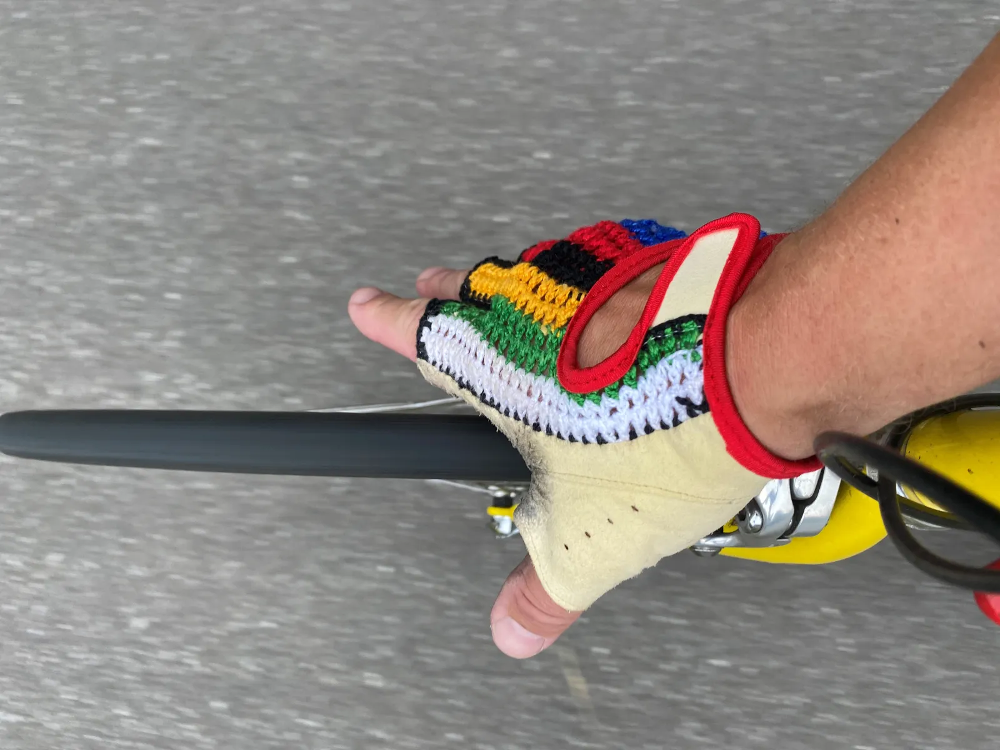
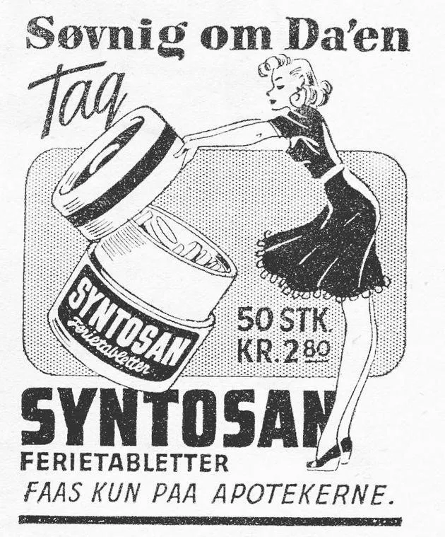

14. etape: Moltenis Jens Stærk Bojesen sejrer på ”Etap secréte” – den hemmelige rute!

Rygterne svirrede i startområdet på 14. etape af Tour of Denmark. I løbsbogen manglede der kort og beskrivelse over etapen! ”Hvad er det nu for noget!?” Rytterne vidste intet, ud over at de skulle stille til start ved krydset i den lille idylliske landsby Jaungyde, som tilfældigvis er hjemsted for Squadra Moltenis ”Dipartimento tecnico”, hvor Grane Maaløe og Jens Stærk Bojesen til dagligt eksperimenterer med ”radical gains” indenfor teknik og kosttilskud.
Ny og banebrydenede etapeform – fra A til B på korteste tid!
Ruteplanlæggerne havde lagt sig i selen for at tilføre løbet nye dimensioner efter Tour de France-associetetet havde flottet sig med 2 ture over Ventoux på samme løbsdag. Dagens instruktion til rytterne i Tour of Denmark var enkel: ”I bliver sendt afsted enkeltvis med 30 sekunders mellemrum. Målet ligger ved Aarhus Universitet, ruten er valgfri, og hurtigste rytter vinder”.
A til B på korteste tid, valgfri rute. Den var ikke set før!
Efter regn gør Rolf-tricket forskellen
I Søhøjlandet er der skybrud næsten dagligt som følge af skyerne, der presses over de mange bakker i området. Regnen skyller flintesten ud på kørebanen, og derfor er der signifikant flere punkteringer i Søhøjlandet. I startområdet havde der aftenen før været et stort skybrud, og derfor instruerede de lokalkendte Grane Maaløe og Jens Stærk resten af Molteniholdet i ”Rolf-tricket” – inspireret af Rolf Sørensens devise om hellere at undgå punkteringer end at forlade sig på et hurtigt dækskifte. Tricket går ud på, med jævne mellemrum, at gribe løst fat om dækkene i fuld fart, for at raspe småsten af, inden de giver punkteringer. Af samme grund kører alle Molteni-ryttere med handsker i ruskind eller læder.
”Husk at passe godt på, når I renser baghjulet, og lad nu være med at lave en ”Chris Anker” (red: at stikke fingrene ind mellem forhjuls-egerne i fuld fart).
Morten Mejsen fra Peugeot Recycled luskede som sædvanligt rundt i udkanten af Molteni-holdet for at lure tips og tricks. Han fik halvt fat i budskabet…


Valg af rute
Flere ryttere skævede op mod den brutale stigning mod øst ud af Jaungyde, og valgte i stedet at cykle mod nord, for at ramme Silkeborgvej ved Låsby.
Jens Stærk stillede op i en noget utraditionel mundering med en tung rygsæk på skuldrene.
Et af rygterne inden starten gik ud på, at vi skulle ud at køre en 583 kilometer lang rute, for at slå rekorden for længste Tour de France-etape på 582 kilometer fra 1920, hvor Firmin Lambot vandt i tiden 19 timer og 44 sekunder. Da jeg bor 100 meter fra rutens start, skyndte jeg mig at pakke rygsæk, liggeunderlag og telt, kogegrej, tre flasker rødvin og en 700 grams oksebøf så jeg kunne tage en overnatning undervejs, fortæller Jens Stærk.
Jens valgte naturligvis den østlige rute ud af byen, så han kunne få stigningen overstået fra start. Han vidste godt at den nordlige rute mod Låsby er værre og længere, så han forcerede med rygsækken direkte ind på stigningen. Den tunge rygsæk og Jens’ 12,5 tunge kilo stålcykel gav en ekstrem høj belastning på knæleddene, som han heldigvis havde smurt ekstra godt ind i cortisonsalve.
Normalt ser jeg dobbelt på stigningen, men pga. vægten så jeg tredobbelt. Det var faktisk en fordel – jeg valgte bare et køre efter den midterste rute og satse på, at mit lokalkendskab ville give en sikker sejr. Efter den første bakke vidste jeg, at resten af ruten primært gik nedad, ud mod Aarhus-bugten. En lang nedkørsel, hvor vægten fra rygsækken ville give en ekstra fordel, afslører Jens Stærk.
Dobbelt dosis kosttilskud
Ved udsigten til 583 kilometer i sadlen inden løbstart tog Grane og Jens en hurtig beslutning om at ordinere Jens en dobbelt dosis Syntosan kosttilskud, som Grane havde fundet i handskerummet, da han overtog HY holdbussen. HY’en havde sidst været ude på landevejene sidst i 70’erne, hvor man brugte tilskuddet for at undgå at falde i søvn, når man skulle køre rigtigt langt. Højest anbefalede dagsdosis var 2 tabletter, så Jens Stærk slugte 4 tabletter lige inden dagens reelle rute blev annonceret.


Tæt forfølgelsesløb og mislykket Peugeot-trick
Morten Mejsen fra Peugeot Recycled lurede Jens Stærks alternative rutevalg og benede efter Jens op ad bakken 30 sekunder senere. Allerede på nedkørslen til Nørre Vissing, ramte han den første grusdynge, men undgik mirakuløst punktering. Mejsen halede ind på Jens Stærk på den næste bakke på vej mod Høver, hvor gruset også lå i kaskader ud over vejen.
Mens de fleste ryttere valgte Silkeborgvej mod Aarhus, fløj Jens Stærk ind mod Aarhus af den lille landrute over Høver, Storring og Lillering – og ramte Silkeborgvej ved Harlev med Mejsen 15 sekunder efter. Begge ryttere halsede ind gennem Brabrand, og I krydset ved Ringvejen – Silkeborgvej overhalede Mejsen med et triumfbrøl Jens Stærk, som i det samme udførte en taktisk genistreg ved at dreje skarp til venstre og skrå gennem krydset ind på en smal grussti, som førte til en vej der går skråt mod universitetet. Mejsen fortsatte forvirret ind ad Silkeborgvej og nåede lige at se Jens Stærks Rolf-greb om forhjulet ud af øjenkrogen.
Rolftricket – selvfølgelig!, tænkte Mejsen.
Mejsen greb om forhjulet, så småstenene fløj om ørerne, men uheldigvis forfejlede Mejsen totalt sit forsøg på at gribe fat om baghjulet, og kom i stedet til at rykke kæden af den store klinge, så bagskifteren låste, og det bløde Peugeotstål bøjede bagskifteren ind i baghjulsegerne. Baghjulet kollapsede, men Mejsen undgik heldigvis et grimt styrt midt på Silkeborgvej. Øjenvidner påstår at have set Mejsen lede efter reservedele i cykelskurene ved Aabyhøj skole, men det kan ikke bekræftes. Men trods alt bragte Mejsen Team Peugeot Re-Cycled op på en 2. plads i holdkonkurrencen.
Jens Stærk var flyvende på resten af ruten op mod Viborgvej, og fik skåret ruten ned til 27,4 kilometer og gennemførte i klart hurtigste tid.

Korteste mulige rute fra Jaungyde til Aarhus Universitetet.
Efter sejrsceremonien fangede vi dagens etapevinder, som stod med blanke øjne og sitrede i kroppen.
Jeg følte mig rigtig stærk på ruten og holdt min taktik med hyppige dækrens og kortest mulige rute. Jeg føler, at jeg har en enorm energi lige nu, så jeg tror jeg vil cykle hjem og klippe hæk og slå græsset inden den store bøf skal på grillen, lød det fra Jens Stærk, med åben mund og tomme øjne.
Jens Stærk pointerede, at han var lettet over at målet ved universitetet sluttede med en lille stigning, så han kunne få hold i cyklen.
Jeg havde det som om, at vægten fra rygsækken trak mig hele vejen ind mod Aarhus. Hvis målstregen havde ligget ved Tangkrogen, havde tyngdekraften sandsynligvis suget mig direkte ud i Aarhus-bugten. Jeg er i forvejen ikke nogen god svømmer, og hvordan skulle det ikke være gået med 15 kilo i rygsækken og en 12,5 kilos stålcykel spændt fast på fødderne…?
FORZA JENS
14. Etape:
1. Jens StærkBojesen, Squadra Molteni
Klassement:
1.Jens StærkBojesen, Squadra Molteni
2. Carsten Jacobsen, Squadra Molteni
3. Svend Seegert, Squadra Molteni
4. Jens Langergaard, Squadra Molteni
5. Eigil Leegaard, Squadra Molteni
6. Max ”Maxteni” Nielsen, Squadra Molteni
7. Per Sandahl, Squadra Molteni
8. Grane Maaløe, Squadra Molteni
9. Niels Bjørnsteen, Squadra Molteni
10. Løjtnant Sørensen, Squadra Molteni
Hold:
1. Squadra Molteni
2. Team Peugeot Re-Cycled
3. Team K-Werk
DNS-Klassement:
Thomas Marker, Team Brooklyn